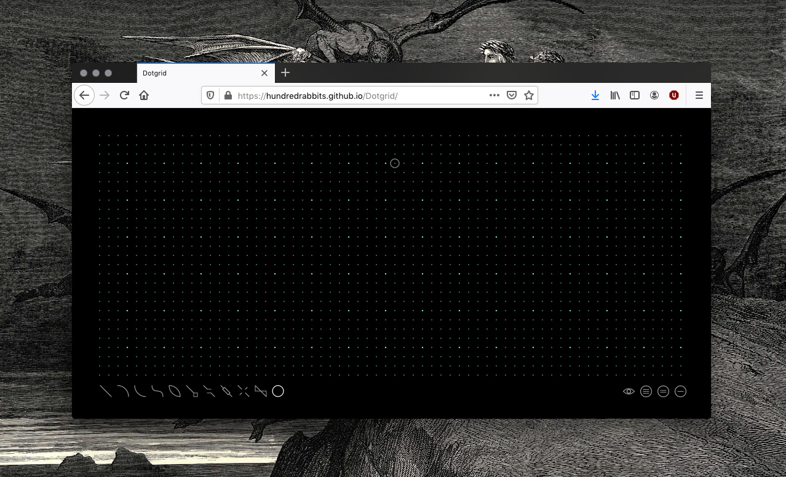

dotgrid
- introduction
- sustainability
- dotgrid
- download
- web version
- donations
- trailer
- tutorial
- line(a)
- arc(s) & reverse-arc(d)
- bezier(f)
- close(z)
- line cap(q)
- line join(w)
- line thickness
- mirror(e)
- fill(r)
- color
- other functions
- drawing complex shapes
- visual
- shortcut quick list
introduction

Dotgrid is a grid-based vector drawing software designed to create logos, icons and type. It supports layers, the full SVG specs and additional effects such as mirroring and radial drawing. Dotgrid exports to both PNG and SVG files.
The application was initially created for internal use, and later made available as a free and open source software. It was developed while in Tonga and in New Zealand in 2017.
sustainability
We create our own tools, built light to reduce our energy use, also to lessen our dependence on closed-source applications we can't repair ourselves.
Read more about our design philosophy
dotgrid

Meet Dotbit, the mascot for Dotgrid. Dotbit is there to talk about updates relating to Dotgrid.
download
web version
It is now possible to use Dotgrid in your browser, without the need to install it as an application.
The reason we did this, is because Apple plans to stop allowing the distribution of applications outside of the AppStore. Another reason is we want to ensure that users — us included — have access to these tools no matter what. We want our ecosystem of tools to be...
- Lightweight and simple.
- Always up-to-date.
- Usable across all platforms.
- Offline-first.
donations
Because Dotgrid Live isn't available through a client, it is harder to receive donations. Donations mean we can spend time improving this tool, and offering support when needed.
Make a donation with...
trailer
tutorial
Upon opening the application, you are presented with a dotted grid, which can be made bigger, or smaller, by resizing the window. A list of tools, represented as icons, sits on the bottom of the window.
Clicking anywhere on the grid will add a white dot to the grid, and by adding additional dots to the grid, notice how the available tool icons become lighter, that means you have enough points to use them, their icon will darken again when you don't.
line(a)
Add two points on the grid. Selecting Line(the diagonal line icon) will link the two points together with a straight white line.

arc(s) & reverse-arc(d)
Press backspace to clear your last segment, and draw another two sets of points, but this time, click on Arc. This, will connect your two points with a curve.
If you undo your last move with ⌘ z, connect your two points again by pressing Arc Reverse(the inverse curve icon). This creates an inverted curve.

bezier(f)
Place two dots on your grid, with a third between them but offset, then press Bezier(the S icon). A white dot will appear separate from the main line, this is a handle that you can use to create your curve. Move the handle (or third point) to change its shape.

close(z)
Create 3 points on the grid, press Line, then press Close (the flat oval icon), your shape will complete itself. If you don't close a shape, you won't be able to fill it, and it will create problems when using Line cap.

line cap(q)
Make a triangle on the grid using 3 points, select the Line to connect them, then, select Linecap (line with a diamond shape at the end). By default, you get a 'round' line cap, you can cycle through the different types by pressing the linecap icon again. You have 3 linecap styles to choose from:
- Round A rounded end cap is added to the end of the line
- Butt A flat edge is added to the end of the line
- Square A square end is added to the end of the line
line join(w)
Add 3 points to the grid to make a triangle, Close the shape and then select Line Join (the icon with two 'hockey sticks' meeting each other).
Line Join changes the look of the corners of your closed shapes, like Line Cap, you can choose from the 3 styles: Round, butt and square. You can cycle between the 3 by pressing on the icon repeatedly. The shortcut to use it is:
line thickness
You can increase or decrease the thickness of your line anytime, using Line Thickness (the line with rectangle over it). The shortcuts to alter the line thickness are:
- Thicker }
- Thinner {
- Thicker +5 ]
- Thinner -5 [
mirror(e)
Drawing a shape, and select Mirror (the icon with 4 lines that aren't crossing), will mirror the image horizontally on the canvas. Pressing on it again, will mirror it vertically, doing it again, mirrors it 180 degrees from the center.
You can tell which sort of mirroring you've got, by seeing the changes in the icon on the menu. To remove the effect, click on the icon until it returns to its original state, with the lines not crossing.
fill(r)
Drawing a closed shape, and selecting Fill (icon resembling a twisted rectangle) will fill it with a single colour. Pressing on the icon again, will remove the fill. Know that if you have other closed shapes on your canvas, this function will fill them all. The shortcut to use it is:

color
You can change the colour of any shape, by clicking on the white circle on the lower right-hand side and entering a colour code(a hex, like FF0000).

other functions
Move points - You can move any point, any time, by selecting it with your cursor and moving it around. If you choose to move a point that is part of an existing shape, it will warp the shape.
Grid on/off - You can toggle the grid, on and off, to better view a design using the shortcut H.
Layers - You can toggle between each layer by using the shortcuts:
- ⌘ 1 for Layer 1
- ⌘ 2 for Layer 2
- ⌘ 3 for Layer 3
Dots will appear over the shapes of the layer that is selected. Having multple layers, enables you to have designs of varying colour and complexity.
drawing complex shapes
To create a circle, draw 5 points on the grid, with the 5th returning to the starting point, then press Arc. You will now have a circle. Select Close to close the shape. The roundness of your circle will depend on where you placed your points. You can always adjust, by selecting the points individually and moving them around.
When making complex shapes, mind how you build your shapes and how the lines will connect, the order will affect your design.
visual

You can change the look and colour of Dotgrid. To do this, download themes from our itch.io page. You can view the colour palettes of each theme in the preview, once you find something you like, drag the file (.svg file) onto Dotgrid. The colours will change instantly.
These themes are part of the Ecosystem Theme, which means that you can apply a theme to any supported app (Left, Donsol, Orca and Ronin).
You can also create your own themes.
shortcut quick list
Stroke types
- Line A
- Arc S
- Arc Rev D
- Bezier F
- Close Z
Stroke effects
- Line cap Q
- Line join W
- Mirror E
- Fill R
- Thicker }
- Thinner {
- Thicker +5 ]
- Thinner -5 [
Dotgrid can be operated with the keyboard
- Add point enter key
- Move up up arrow key
- Move down down arrow key
- Move right right arrow ley
- Move left left arrow key
- Remove point shift + backspace
- Remove segment backspace
Toggling between layers
- Foreground ⌘ 1
- Middle ⌘ 2
- Background ⌘ 3
Other
- Color picker G
- Toggle grid on/off H
- Save ⌘ S
- Export Vector ⌘ E
- Export Image ⌘ shift E
- Revert ⌘ + W
- New ⌘ N
- Open ⌘ O
- Undo ⌘ Z
- Redo ⌘ shift Z
This application supports the Ecosystem Theme. See the License file for license rights and limitations (MIT). Pull Requests are welcome, but please read our design philosophy first.